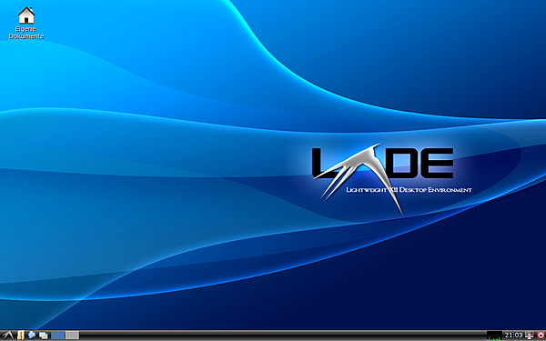
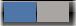
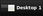
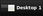
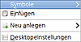
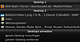
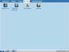

LXDE Grundlagen
Dieser Artikel wurde für die folgenden Ubuntu-Versionen getestet:
Dieser Artikel ist größtenteils für alle Ubuntu-Versionen gültig.
 Dieser Artikel gibt einen Überblick in die Basisfunktionen der graphischen Oberfläche LXDE, die in Lubuntu zum Einsatz kommt. Zusätzliche Informationen zu diesem Projekt kann man im Geschichte von LXDE nachlesen.
Dieser Artikel gibt einen Überblick in die Basisfunktionen der graphischen Oberfläche LXDE, die in Lubuntu zum Einsatz kommt. Zusätzliche Informationen zu diesem Projekt kann man im Geschichte von LXDE nachlesen.
Die Übersichtsseite von LXDE führt die vorinstallierten Programme auf, wobei aber zwischen LXDE und Lubuntu unterschieden werden muss.
Orientierung¶
Das Aussehen von Lubuntu variiert optisch - je nach gewählter Oberfläche. So kann bei der grafischen Anmeldung über in LightDM – je nach Installationsvariante – "Lubuntu", "Openbox" und "Lubuntu Netbook" ausgewählt werden. Aber auch in den unterschiedlichen Versionen gibt es kleine Unterschiede.
Ein Beispiel: 
Menüleiste¶
In der unteren linken Ecke des Bildschirms findet man im Panel ganz links das  LXDE-Menü, gefolgt von der Anwendungsstartleiste.
LXDE-Menü, gefolgt von der Anwendungsstartleiste.
Möchte man die Anwendungsstartleiste anpassen, wird der Artikel LXDE Einstellungen empfohlen.
In der rechten unteren Ecke befinden sich ein Benachrichtigungsfeld, die Uhrzeit, die Bildschirmsperre und das Symbol zum Beenden der Sitzung. Im Benachrichtungsfeld (Systray) wird man über evtl. verfügbare Updates und den Zustand der Netzwerkverbindung informiert. Über kann die aktuelle Sitzung beendet und das System heruntergefahren werden. Sollte dies nicht funktionieren und z.B. gar keine Reaktion bei Klick erfolgen, dann muss
sudo apt-get install lxsession-logout
noch installiert werden. Siehe auch LXSession abmelden 
Tipps¶

Virtuelle Arbeitsflächen¶
Um die Übersicht bei vielen geöffneten Fenstern nicht zu verlieren, hat man unter LXDE die Möglichkeit, virtuelle Desktops zu nutzen. Diese sind in der Leiste zu ersehen. Um die Arbeitsfläche zu wechseln, führt man einen  Linksklick auf die gewünscht Arbeitsfläche aus oder verweilt mit dem Zeiger über der Anzeige (Pager) und betätigt das Mausrad
Linksklick auf die gewünscht Arbeitsfläche aus oder verweilt mit dem Zeiger über der Anzeige (Pager) und betätigt das Mausrad  für den Wechsel. Man erhält eine visuelle Rückmeldung  über die derzeit aktive Arbeitsfläche.
für den Wechsel. Man erhält eine visuelle Rückmeldung  über die derzeit aktive Arbeitsfläche.

Arbeitsflächenmenü¶
Ein Rechtsklick  auf den leeren Desktop öffnet das Kontext- bzw. Arbeitsflächenmenü. Hier können neue Dateien bzw. Ordner erstellt und der Desktop angepasst werden.
auf den leeren Desktop öffnet das Kontext- bzw. Arbeitsflächenmenü. Hier können neue Dateien bzw. Ordner erstellt und der Desktop angepasst werden.

Ein Klick mit der mittleren Maustaste bzw. mit dem Mausrad öffnet ein weiteres Menü. Hier kann man ersehen, welche für Programme auf welcher Arbeitsfläche geöffnet sind und diese direkt aufrufen.
Dateizuordnungen¶
Wie man eigene Dateizuordnungen erstellt, ist im Artikel PCMan File Manager zu finden.
Mülleimer¶
Der Papierkorb kann ab Ubuntu 14.04 nicht nur über den Dateimanager PCManFM genutzt, sondern auch als Symbol auf dem Desktop angezeigt werden. Bei dieser Variante ist es allerdings nicht möglich, ihn über das Kontextmenü zu leeren. Wie man das ändert, wird im Artikel PCMan File Manager/Benutzerdefinierte Aktionen beschrieben.

Netbooks¶
Nutzer von Netbooks können zur besseren Darstellung und Bedienbarkeit auf dem kleinen Display LXLauncher verwenden, welcher bei der oben genannten Auswahl von "Lubuntu Netbook" gestartet wird.
 Übersichtsartikel
Übersichtsartikel- Erstellt mit Inyoka
-
 2004 – 2017 ubuntuusers.de • Einige Rechte vorbehalten
2004 – 2017 ubuntuusers.de • Einige Rechte vorbehalten
Lizenz • Kontakt • Datenschutz • Impressum • Serverstatus -
Serverhousing gespendet von